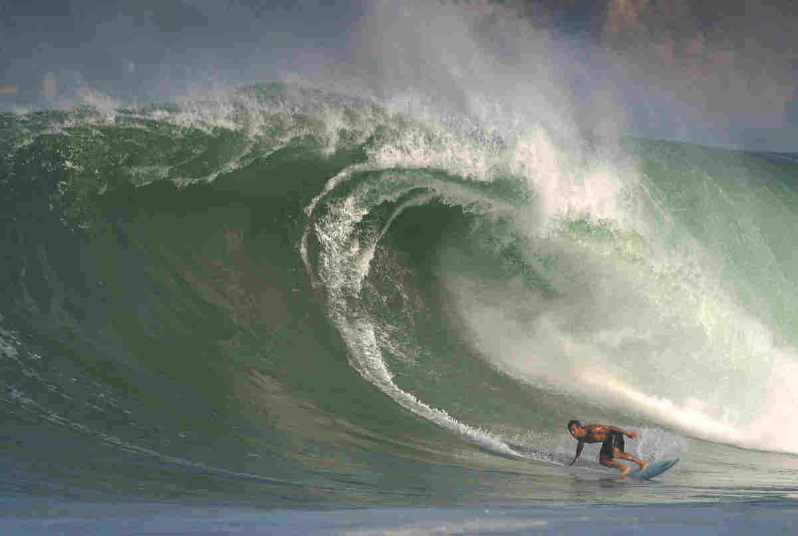

Puerto Escondido is known for one of the world's best surfing beaches, Playa Zicatela. It has a beautiful yellow sand beach and huge world-class surfing waves (but be careful if you go swimming...the current is very strong!).
Here is a picture of a surfer at Puerto Escondido...
¡Qué onda!

Tikal is the largest of the ancient ruined cities of the Mayan civilization. It is a really awesome, magical place. If you go to Tikal, you have three main lodging options:
Throwin' back pints with the locals in Dublin this past summer
made me really appreciate the pub culture. The top three bars in
Dublin for good craic
(i.e. good fun) in order of my
preference are:
The price of a pint of beer is about €5. Although I would recommend the cider (around €8 a pint).